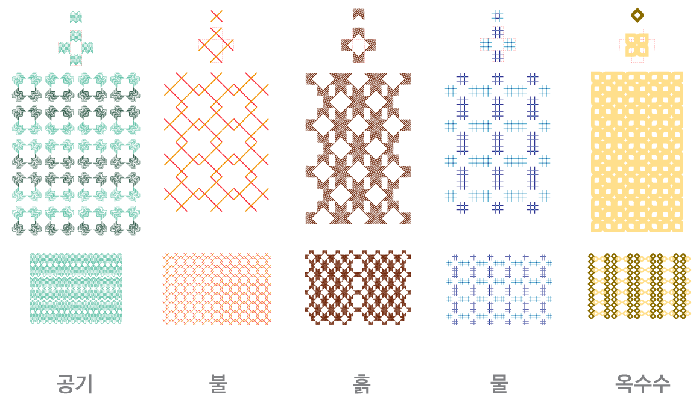

Diverse people come to Kurikindi Center to learn. They are given titles from five elements according to their roles at the Center. The five elements are air, water, fire, earth and corn. The five elements connect to form a small universe and the center also seeks to become a small but beautiful community.
Air: Wise elders with bright eyes and warm hearts Fire: Young adventurers with free spirit and courage Earth: Staff of Kurikindi Center Water: Artists and others who seek to pave new roads with young people Corn: Young children and teenagers who create new values

What do you call the artists who seek to pave new roads with young people?